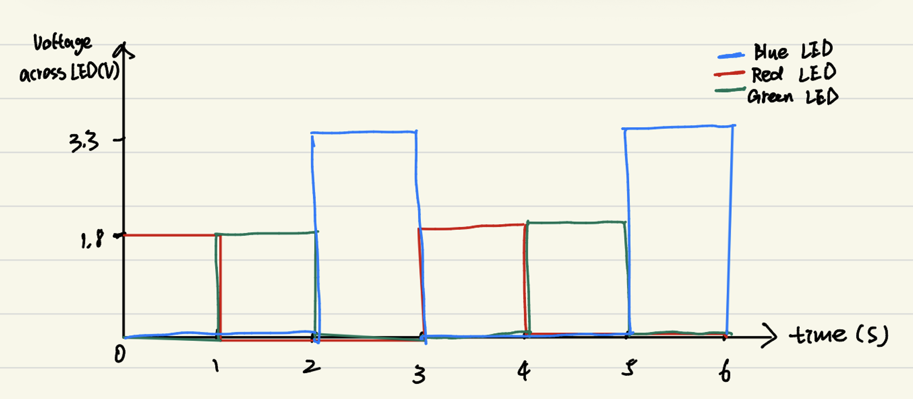

01
Voltage across the LEDs over time
The red and green LEDs have an approximate voltage drop of 1.8 V, while the blue LED has an approximate voltage drop of 3.3 V. When an LED is off, the voltage across it is approximately 0 V. The three-second pattern repeats continuously.
